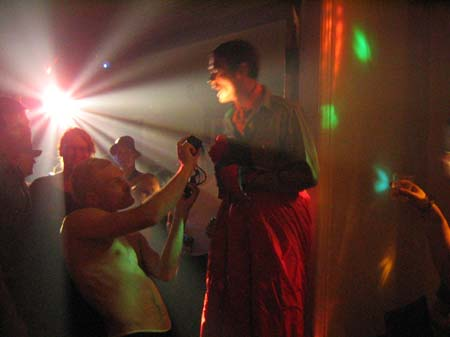

| dunst Spejder Fest | 26. November 2004 |
 |
|
| Puta i spejder uniform sang en ny sang. Photo: Hunter. Puta (Puha) sked en stor lort i vindugskarmen som han stolt viste frem til de nærmeste, hvorefter han med to stykker papir lyftede den og smed den ud af vinduet så den landede ude foran hoved indgangen til Restaurant RIS RAS. Dennis Agerblad tørrede vinduskarmen ren. Puta var for underlig. Puta pissede. Senere på aftenen stod puta oppe på scenen og pissede en lang stråle tis ud på dansegulvet. Gæsterne sørgede for at fordele tisset med deres sko rundt i alle lokalerne på gulve og gulvtæpper :-) |
|